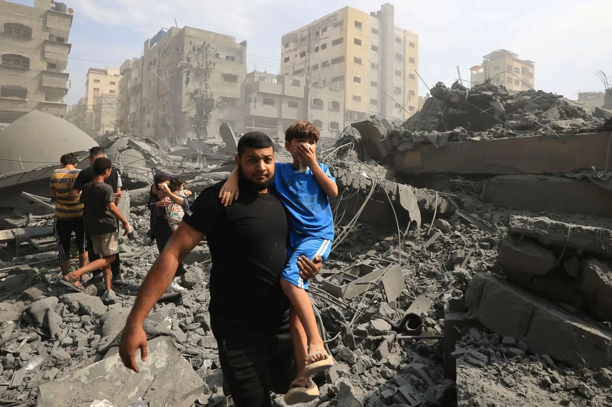
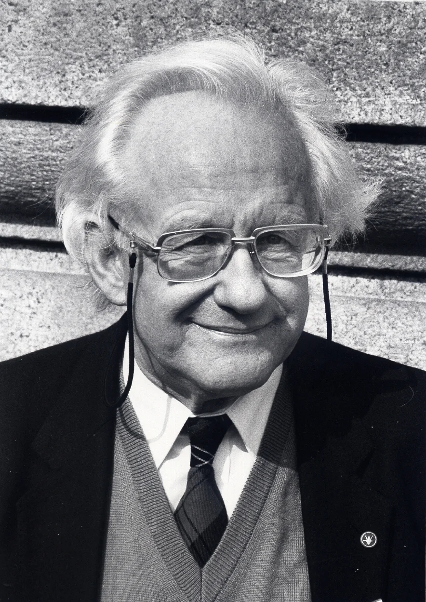
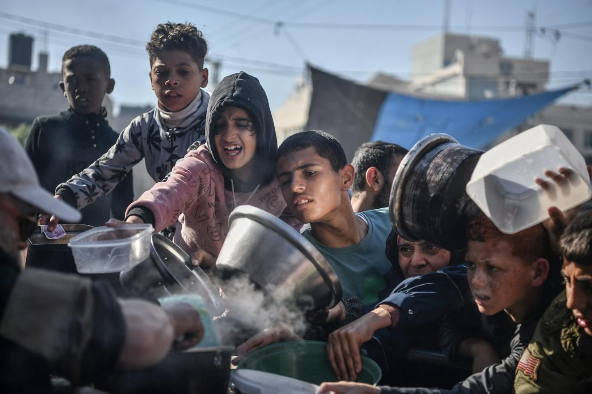
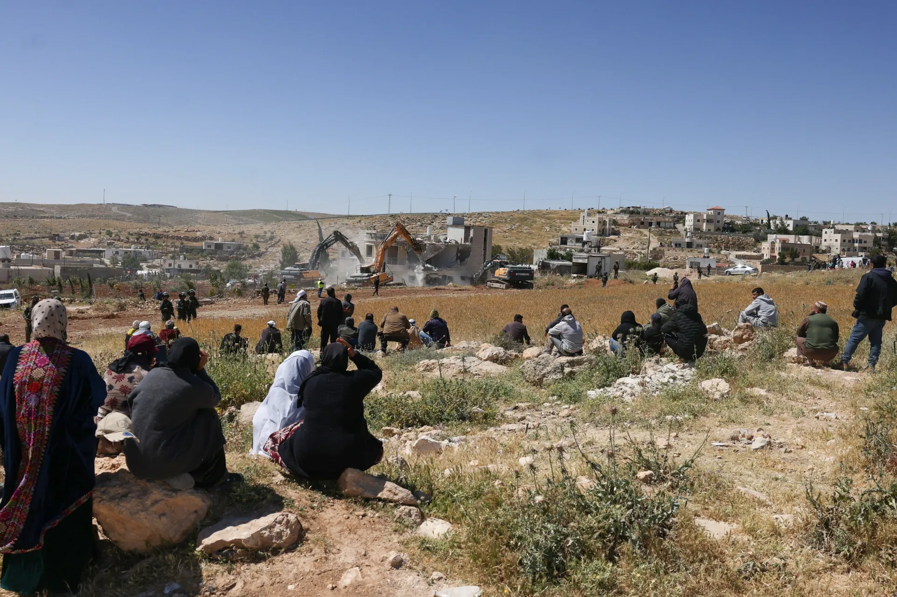
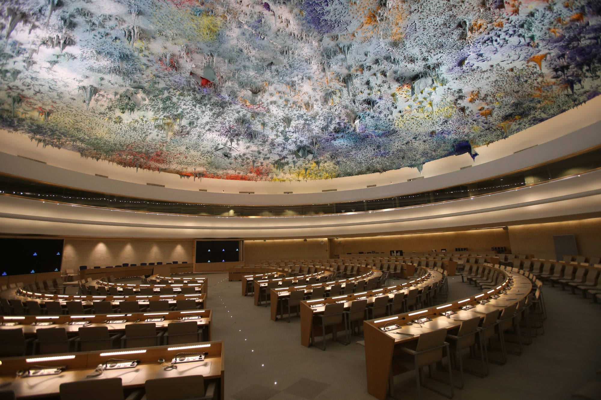
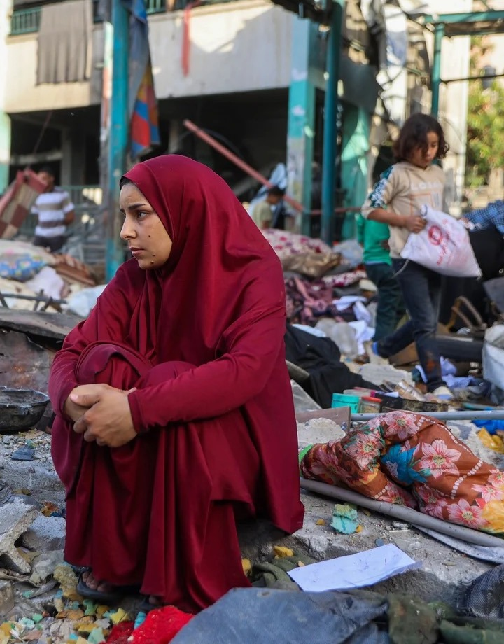

Clamé comme un miracle diplomatique il y a un an, le cessez-le-feu à Gaza est, aujourd'hui, vu comme tous comme un mirage. À l'ONU, Macron hausse le ton : « Certains se flattent d'une paix prétendue ! Mais cette paix n'a pas rouvert une seule seconde les voies humanitaires. Devons-nous contempler ce spectacle qui nous fait honte à tous ? Jamais ! » Un « en même temps » caractéristique : Paris a autorisé une cinquième fois l'avion de Netanyahou à survoler la France depuis le mandat d'arrêt de la CPI. Finalement, de quelle paix parle-t-on ?
Discours à l'ONU, sept. 2026
À Tel-Aviv, il propose une « coalition internationale » contre le Hamas.
À l'Assemblée nationale, Séjourné : « accuser l'État juif de génocide, c'est franchir un seuil moral. »
« La cohérence, c'est de ne pas fournir les armes de guerre. »
La France revendique 100 M€ d'aide humanitaire par an (300 M€ depuis 2023).
Devant l'ONU : « cette paix n'a pas rouvert un seul corridor humanitaire. »
Les commandes israéliennes aux industriels français doublent (30 M€).
La même semaine, la CIJ juge « plausible » le risque de génocide et ordonne des mesures d'urgence.
« Flux ininterrompu » d'armes vers Israël depuis octobre 2023 — dont 100 000 munitions de mitrailleuse.
Livraisons de pièces de drones Hermes 900 à Elbit Systems.
Mandat CPI ignoré : 5 survols de l'avion de Netanyahou autorisés.
Paix de façade qui laisse intacte la structure de domination : si elle se prétend neutre, elle ne l'est jamais — l'un y est en sécurité, l'autre y reste sous oppression organisée.
Le colonisateur n'invoque la « paix » que lorsqu'il est attaqué. Sinon, elle est permanente : violence structurelle sous façade pacifique, parfois blocus, checkpoints, démolitions, accès à l'eau coupé.

En 1969, le sociologue norvégien Johan Galtung distingue la paix négative (simple absence de guerre) de la paix positive : l'absence de violence structurelle, celle qui vit dans les lois, les frontières, les rapports de force, bien après que les armes se sont tues.
La violence structurelle est silencieuse, elle ne se voit pas — elle est statique par essence, elle est l'eau qui dort.
La déshumanisation des Palestiniens est le fondement de la domination coloniale. En 1982, Menachem Begin les décrit comme des « bêtes qui marchent sur deux pattes ». En 1983, Rafael Eitan : des « cafards drogués dans une bouteille ». En 2023, Yoav Gallant reprend le geste : des « animaux humains ».
En avril 2026, le ministre Jean-Noël Barrot reprend la phrase attribuée à Golda Meir : « Nous pouvons pardonner aux Arabes d'avoir tué nos enfants, mais nous ne pouvons pas leur pardonner de nous avoir obligés à tuer leurs enfants. »
Tant que l'humanité de l'un est niée, parler de paix n'a pas de sens.
Les médias couvrent le conflit comme un dessin animé, sans jamais expliquer les causes structurelles : Gaza y paraît comme une crise humanitaire venue de nulle part, décontextualisée, déshistoricisée. On y parle d'un « cycle de la violence » ou d'une « trêve brisée » : le spectateur suit des épisodes, mais reste dans une ignorance entretenue.
Acrimed documente l'asymétrie du traitement médiatique : l'armée israélienne citée sans vérification, le ministère de la Santé de Gaza précédé d'un « selon le Hamas » ; les Palestiniens réduits à des « corps sans voix », face aux portraits humanisants des Israéliens.

C'est ça, la paix coloniale. Deux territoires voisins, deux réalités diamétralement opposées : la sécurité et la paix pour les uns, la plus grande crise économique jamais enregistrée dans le monde pour les autres. À Gaza, toujours sous blocus, le génocide se fait toujours sentir : 0,58 dollar par jour de PIB par habitant, 90 % de la population active sans emploi, 92 % des établissements économiques détruits. La CNUCED parle de décennies de développement anéanties.
CNUCED (ONU), sept. 2026
Le 26 septembre 2025, Trump l'assure : « Je ne permettrai pas à Israël d'annexer la Cisjordanie. » Moins d'un mois plus tard, le 23 octobre, la Knesset vote l'annexion (71 voix contre 13) au nom d'un « droit naturel, historique et légal ». Aucune sanction ne suit.
Sur le terrain, l'annexion ne s'embarrasse pas des votes : le projet E1 coupe la Cisjordanie en deux, 20 214 logements validés depuis 2025 — un record. Smotrich revendique 82 % du territoire.


Le consensus juridique s'est formé : la Commission d'enquête internationale de l'ONU conclut à des motifs raisonnables qu'Israël continue de commettre un génocide à Gaza — quatre des cinq actes définis par la Convention de 1948. Les enfants représentent 27 % des tués et blessés depuis octobre 2023, un ciblage délibéré selon la Commission. Amnesty et Human Rights Watch documentent le même constat.
Ce que les institutions documentent a un nom. « Ni guerre, ni paix. »
Commission d'enquête de l'ONU, 18 juin 2026 · Amnesty · HRW
En Cisjordanie, plus de 36 000 Palestiniens ont été déplacés entre novembre 2024 et octobre 2025 — une ampleur inédite, selon le Haut-Commissariat de l'ONU. Le rythme mensuel des déplacements a doublé depuis 2022, un record depuis le début du recensement onusien en 2009.
À Gaza, la « ligne jaune » cède du terrain depuis l'accord : moins de 40 % du territoire reste aux Palestiniens. Des milliers de déplacés vivent encore sous tente, leur maison située au-delà de la ligne — depuis plus de deux ans.
Les colons frappent, l'armée intervient. La paix coloniale, c'est la paix des uns au détriment des autres.

Selon le ministère de la Santé, depuis le 10 octobre 2025, plus de 1 372 Palestiniens ont été tués à Gaza, un bilan jugé fiable par l'ONU. Ce que l'on répète depuis un an apparaît désormais au grand jour : la paix coloniale. Frappes, ripostes, incidents : le cessez-le-feu a certes offert un répit, mais surtout permis à la domination de se maintenir. La combattre exige du courage politique : la nommer, refuser de la normaliser et s'attaquer aux structures qui la perpétuent.